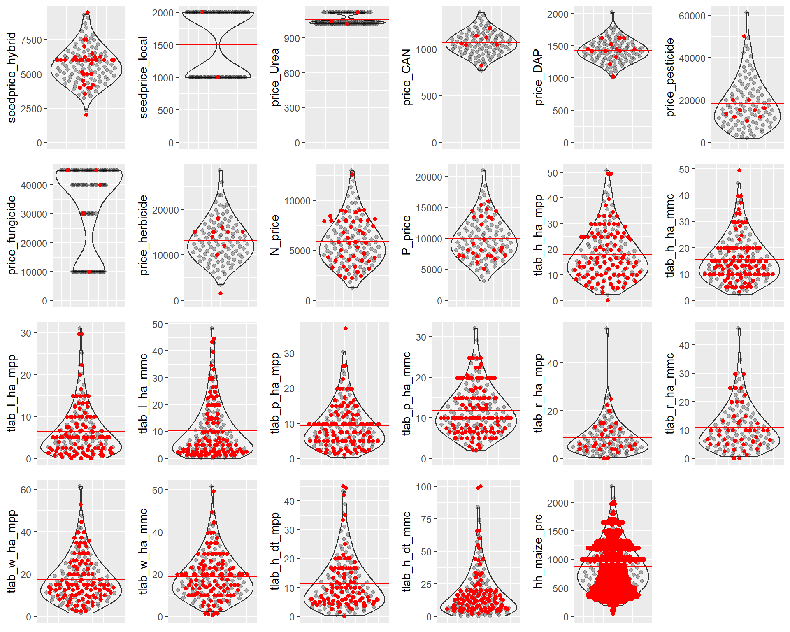

5 Manual Latin Hypercube Sampling
This last section describes how to use the TAMASA tool kit to perform Latin Hypercube sampling.
Make sure you have the required packages installed:
packages <- c("lhs","ggplot2", "purrr", "dplyr", "here", "stringr",
"tidyr", "tibble", "ggbeeswarm", "ggpubr")
install.packages(packages, dependencies = TRUE)5.1 Using the TAMASA lhc kit.
First source the TAMASA_.*_lhc functions into memory. You don’t have to bother about loading the require packages using library, it will be done in the background for you.
5.1.1 TAMASA_prepare_lhc()
The firs step is, to prepare a reference data.frame containing the values to feed to the lhc sampling function and some useful information.
## # A tibble: 23 x 6
## param values count mean sd lhc_bin
## <chr> <named list> <dbl> <dbl> <dbl> <int>
## 1 seedprice_hybrid <dbl [35]> 35 5637. 1333. 1
## 2 seedprice_local <dbl [2]> 2 1500 707. 0
## 3 price_Urea <int [3]> 3 1060 52.9 0
## 4 price_CAN <int [7]> 7 1063. 125. 1
## 5 price_DAP <int [13]> 13 1425. 169. 1
## 6 price_pesticide <int [10]> 10 18378 11588. 1
## 7 price_fungicide <int [5]> 5 34032 14757. 0
## 8 price_herbicide <int [10]> 10 13180 4621. 1
## 9 N_price <dbl [46]> 46 5886. 2411. 1
## 10 P_price <dbl [27]> 27 9953. 3397. 1
## # ... with 13 more rowsIt contains the following columns:
param: character, variable name.values: list column with all values.count: numeric, number of data points per variable.mean: numeric, average value.sd: numeric, standard deviation.lhc_bin: integer, indicating if lhc sampling should be perform for this variable (1) or not (0).
If the number of data points (count) is less than 5, lhc_bin will be equal to 0. In that case, the exisiting data points will just be randomly sampled n times.
5.1.2 TAMASA_sample_lhc()
Once vars_df has been prepared, TAMASA_sample_lhc can be called to actually perform the lhc sampling.
The argument n simply specifies the number of data points to be sampled from the underlying gamma distributions.
5.1.3 TAMASA_plot_lhc()
The sampled data can be checked as such. The grey data points correspond to the sampled data while the plain red onec represent the real data. The horizontal red line is the real data average.

5.1.4 Use that in code
Upon integrating that code into a broader simulation scheme, you might want to store the data.frame harbouring the sampled data for each run. Below, a simple way to do that using a list.
5.2 Recap table
The table below summarizes all the variable extracted from the TAMASA APS 2017 survey for which latin hypercube sampling is performed.
| From Section | Variable | Description | Unit | Type |
|---|---|---|---|---|
| community_NPK | N_price | price at peak demand (aug-dec) of Nitrogen | \(Tsh.kg^{-1}\) | integer |
| community_NPK | P_price | price at peak demand (aug-dec) of Phosphorus | \(Tsh.kg^{-1}\) | integer |
| community | price_pesticide | price at peak demand (aug-dec) for different inputs. | \(Tsh.kg^{-1}\) | integer |
| community | price_herbicide | Calculated as: | \(Tsh.kg^{-1}\) | integer |
| community | price_fungicide | (Price / amount converted to kg) + transp_price | \(Tsh.kg^{-1}\) | integer |
| community | price_DAP | - | \(Tsh.kg^{-1}\) | integer |
| community | price_CAN | - | \(Tsh.kg^{-1}\) | integer |
| community | price_Urea | - | \(Tsh.kg^{-1}\) | integer |
| focalplot | seedprice_hybrid | seed price for hybrid (improved) varieties | \(Tsh.kg^{-1}\) | integer |
| focalplot | seedprice_local | seed price for local (improved) varieties | \(Tsh.kg^{-1}\) | integer |
| household | tlab_h_ha | total labour - harvesting | \(work \, day.ha{-1}\) | double |
| household | tlab_l_ha | total labour - land preparation | \(work \, day.ha{-1}\) | double |
| household | tlab_p_ha | total labour - planting | \(work \, day.ha{-1}\) | double |
| household | tlab_r_ha | total labour - fertilizing | \(work \, day.ha{-1}\) | double |
| household | tlab_w_ha | total labour - weeding | \(work \, day.ha{-1}\) | double |
| household | tlab_h_dt | total labour - harvesting in work days per ton | \(work \, day.ton{-1}\) | double |